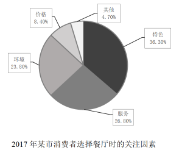

2018 年全国硕士研究生招生考试英语（二）
Section I Use of English
Directions:
Read the following text. Choose the best word(s) for each numbered blank and mark A, B, C or D on the ANSWER SHEET. (10 points)
Why do people read negative Internet comments and do other things that will obviously be painful? Because humans have an inherent need to 1 uncertainty, according to a recent study in Psychological Science. The new research reveals that the need to know is so strong that people will 2 to satisfy their curiosity even when it is clear the answer will 3 .
In a series of four experiments, behavioral scientists at the University of Chicago and the Wisconsin School of Business tested students’ willingness to 4 themselves to unpleasant stimuli in an effort to satisfy curiosity. For one 5 , each participant was shown a pile of pens that the researcher claimed were from a previous experiment. The twist? Half of the pens would 6 an electric shock when clicked.
Twenty-seven students were told which pens were electrified; another twenty-seven were told only that some were electrified. 7 left alone in the room, the students who did not know which ones would shock them clicked more pens and incurred more shocks than the students who knew what would 8 . Subsequent experiments reproduced this effect with other stimuli, 9 the sound of fingernails on a chalkboard and photographs of disgusting insects.
The drive to 10 is deeply rooted in humans, much the same as the basic drives for 11 or shelter, says Christopher Hsee of the University of Chicago. Curiosity is often considered a good instinct — it can 12 new scientific advances, for instance — but sometimes such 13 can backfire. The insight that curiosity can drive you to do 14 things is a profound one.
Unhealthy curiosity is possible to 15 , however. In a final experiment, participants who were encouraged to 16 how they would feel after viewing an unpleasant picture were less likely to 17 to see such an image. These results suggest that imagining the 18 of following through on one’s curiosity ahead of time can help determine 19 it is worth the endeavor. “Thinking about long-term 20 is key to reducing the possible negative effects of curiosity,” Hsee says. In other words, don’t read online comments.
Section II Reading Comprehension
Part A
Directions:
Read the following four texts. Answer the questions after each text by choosing A, B, C or D. Mark your answers on the ANSWER SHEET. (40 points)
Text 1
It is curious that Stephen Koziatek feels almost as though he has to justify his efforts to give his students a better future.
Mr. Koziatek is part of something pioneering. He is a teacher at a New Hampshire high school where learning is not something of books and tests and mechanical memorization, but practical. When did it become accepted wisdom that students should be able to name the 13th president of the United States but be utterly overwhelmed by a broken bike chain?
As Koziatek knows, there is learning in just about everything. Nothing is necessarily gained by forcing students to learn geometry at a graffitied desk stuck with generations of discarded chewing gum. They can also learn geometry by assembling a bicycle.
But he’s also found a kind of insidious prejudice. Working with your hands is seen as almost a mark of inferiority. Schools in the family of vocational education “have that stereotype…that it’s for kids who can’t make it academically,” he says.
On one hand, that viewpoint is a logical product of America’s evolution. Manufacturing is not the economic engine that it once was. The job security that the US economy once offered to high school graduates has largely evaporated. More education is the new principle. We want more for our kids, and rightfully so.
But the headlong push into bachelor’s degrees for all — and the subtle devaluing of anything less — misses an important point: That’s not the only thing the American economy needs. Yes, a bachelor’s degree opens more doors. But even now, 54 percent of the jobs in the country are middle-skill jobs, such as construction and high-skill manufacturing. But only 44 percent of workers are adequately trained.
In other words, at a time when the working class has turned the country on its political head, frustrated that the opportunity that once defined America is vanishing, one obvious solution is staring us in the face. There is a gap in working-class jobs, but the workers who need those jobs most aren’t equipped to do them. Koziatek’s Manchester School of Technology High School is trying to fill that gap.
Koziatek’s school is a wake-up call. When education becomes one-size-fits-all, it risks overlooking a nation’s diversity of gifts.
21. A broken bike chain is mentioned to show students’ lack of ____
22. There exists the prejudice that vocational education is for kids who ____
23. We can infer from Paragraph 5 that high school graduates ____
24. The headlong push into bachelor’s degrees for all ____
25. The author’s attitude toward Koziatek’s school can be described as ____
Text 2
While fossil fuels — coal, oil, gas — still generate roughly 85 percent of the world’s energy supply, it’s clearer than ever that the future belongs to renewable sources such as wind and solar. The move to renewables is picking up momentum around the world: They now account for more than half of new power sources going on line.
Some growth stems from a commitment by governments and farsighted businesses to fund cleaner energy sources. But increasingly the story is about the plummeting prices of renewables, especially wind and solar. The cost of solar panels has dropped by 80 percent and the cost of wind turbines by close to one-third in the past eight years.
In many parts of the world renewable energy is already a principal energy source. In Scotland, for example, wind turbines provide enough electricity to power 95 percent of homes. While the rest of the world takes the lead, notably China and Europe, the United States is also seeing a remarkable shift. In March, for the first time, wind and solar power accounted for more than 10 percent of the power generated in the US, reported the US Energy Information Administration.
President Trump has underlined fossil fuels — especially coal — as the path to economic growth. In a recent speech in Iowa, he dismissed wind power as an unreliable energy source. But that message did not play well with many in Iowa, where wind turbines dot the fields and provide 36 percent of the state’s electricity generation — and where tech giants like Microsoft are being attracted by the availability of clean energy to power their data centers.
The question “what happens when the wind doesn’t blow or the sun doesn’t shine?” has provided a quick put-down for skeptics. But a boost in the storage capacity of batteries is making their ability to keep power flowing around the clock more likely.
The advance is driven in part by vehicle manufacturers, who are placing big bets on battery-powered electric vehicles. Although electric cars are still a rarity on roads now, this massive investment could change the picture rapidly in coming years.
While there’s a long way to go, the trend lines for renewables are spiking. The pace of change in energy sources appears to be speeding up — perhaps just in time to have a meaningful effect in slowing climate change. What Washington does — or doesn’t do — to promote alternative energy may mean less and less at a time of a global shift in thought.
26. The word “plummeting” (Para.2) is closest in meaning to ____
27. According to Paragraph 3, the use of renewable energy in America ____
28. It can be learned that in Iowa, ____
29. Which of the following is true about clean energy according to Paragraphs 5 & 6?
30. It can be inferred from the last paragraph that renewable energy ____
Text 3
The power and ambition of the giants of the digital economy is astonishing — Amazon has just announced the purchase of the upmarket grocery chain Whole Foods for $13.5bn, but two years ago Facebook paid even more than that to acquire the WhatsApp messaging service, which doesn’t have any physical product at all. What WhatsApp offered Facebook was an intricate and finely detailed web of its users’ friendships and social lives.
Facebook promised the European commission then that it would not link phone numbers to Facebook identities, but it broke the promise almost as soon as the deal went through. Even without knowing what was in the messages, the knowledge of who sent them and to whom was enormously revealing and still could be. What political journalist, what party whip, would not want to know the makeup of the WhatsApp groups in which Theresa May’s enemies are currently plotting? It may be that the value of Whole Foods to Amazon is not so much the 460 shops it owns, but the records of which customers have purchased what.
Competition law appears to be the only way to address these imbalances of power. But it is clumsy. For one thing, it is very slow compared to the pace of change within the digital economy. By the time a problem has been addressed and remedied it may have vanished in the marketplace, to be replaced by new abuses of power. But there is a deeper conceptual problem, too. Competition law as presently interpreted deals with financial disadvantage to consumers and this is not obvious when the users of these services don’t pay for them. The users of their services are not their customers. That would be the people who buy advertising from them — and Facebook and Google, the two virtual giants, dominate digital advertising to the disadvantage of all other media and entertainment companies.
The product they’re selling is data, and we, the users, convert our lives to date for the benefit of the digital giants. Just as some ants farm the bugs called aphids for the honeydew they produce when they feed, so Google farms us for the data that our digital lives yield. Ants keep predatory insects away from where their aphids feed; Gmail keeps the spammers out of our inboxes. It doesn’t feel like a human or democratic relationship, even if both sides benefit.
31. According to Paragraph 1, Facebook acquired WhatsApp for its ____
32. Linking phone numbers to Facebook identities may ____
33. According to the author, competition law ____
34. Competition law as presently interpreted can hardly protect Facebook users because
____
35. The ants analogy is used to illustrate ____
Text 4
To combat the trap of putting a premium on being busy, Cal Newport, author of Deep Work: Rules for Focused Success in a Distracted World, recommends building a habit of “deep work” — the ability to focus without distraction.
There are a number of approaches to mastering the art of deep work — be it lengthy retreats dedicated to a specific task; developing a daily ritual; or taking a “journalistic” approach to seizing moments of deep work when you can throughout the day. Whichever approach, the key is to determine your length of focus time and stick to it.
Newport also recommends “deep scheduling” to combat constant interruptions and get more done in less time. “At any given point, I should have deep work scheduled for roughly the next month. Once on the calendar, I protect this time like I would a doctor’s appointment or important meeting,” he writes.
Another approach to getting more done in less time is to rethink how you prioritize your day — in particular how we craft our to-do lists. Tim Harford, author of Messy: The Power of Disorder to Transform Our Lives, points to a study in the early 1980s that divided undergraduates into two groups: some were advised to set out monthly goals and study activities; others were told to plan activities and goals in much more detail, day by day.
While the researchers assumed that the well-structured daily plans would be most effective when it came to the execution of tasks, they were wrong: the detailed daily plans demotivated students. Harford argues that inevitable distractions often render the daily to-do list ineffective, while leaving room for improvisation in such a list can reap the best results.
In order to make the most of our focus and energy, we also need to embrace downtime, or as Newport suggests, “be lazy.”
“Idleness is not just a vacation, an indulgence or a vice; it is as indispensable to the brain as vitamin D is to the body… [idleness] is, paradoxically, necessary to getting any work done,” he argues.
Srini Pillay, an assistant professor of psychiatry at Harvard Medical School, believes this counterintuitive link between downtime and productivity may be due to the way our brains operate. When our brains switch between being focused and unfocused on a task, they tend to be more efficient.
“What people don’t realise is that in order to complete these tasks they need to use both the focus and unfocus circuits in their brain,” says Pillay.
36. The key to mastering the art of deep work is to ____
37. The study in the early 1980s cited by Harford shows that ____
38. According to Newport, idleness is ____
39. Pillay believes that our brains’ shift between being focused and unfocused ____
40. This text is mainly about ____
Part B
Directions:
Read the following text and answer the questions by choosing the most suitable subheading from the list A-G for each numbered paragraphs (41-45). There are two extra subheadings which you do not need to use. Mark your answers on the ANSWER SHEET. (10 points)
Five Ways to Make Conversation with Anyone
Conversations are links, which means when you have a conversation with a new person a link gets formed and every conversation you have after that moment will strengthen the link.
You meet new people every day: the grocery worker, the cab driver, new people at work or the security guard at the door. Simply starting a conversation with them will form a link.
Here are five simple ways that you can make the first move and start a conversation with strangers.
41. _________________________
Suppose you are in a room with someone you don’t know and something within you says “I want to talk with this person” — this is something that mostly happens with all of us. You wanted to say something — the first word — but it just won’t come out, it feels like it is stuck somewhere. I know the feeling and here is my advice: just get it out.
Just think: what is the worst that could happen? They won’t talk with you? Well, they are not talking with you now!
I truly believe that once you get that first word out everything else will just flow. So keep it simple: “Hi”, “Hey” or “Hello” — do the best you can to gather all of the enthusiasm and energy you can, put on a big smile and say “Hi”.
42. _________________________
It’s a problem all of us face; you have limited time with the person that you want to talk with and you want to make this talk memorable.
Honestly, if we got stuck in the rut of “hi”, “hello”, “how are you?” and “what’s going on?”, you will fail to give the initial jolt to the conversation that can make it so memorable.
So don’t be afraid to ask more personal questions. Trust me, you’ll be surprised to see how much people are willing to share if you just ask.
43. _________________________
When you meet a person for the first time, make an effort to find the things which you and that person have in common so that you can build the conversation from that point. When you start conversation from there and then move outwards, you’ll find all of a sudden that the conversation becomes a lot easier.
44. _________________________
Imagine you are pouring your heart out to someone and they are just busy on their phone, and if you ask for their attention you get the response “I can multitask.”
So when someone tries to communicate with you, just be in that communication wholeheartedly. Make eye contact. Trust me, eye contact is where all the magic happens. When you make eye contact, you can feel the conversation.
45. _________________________
You all came into a conversation where you first met the person, but after some time you may have met again and have forgotten their name. Isn’t that awkward!
So, remember the little details of the people you met or you talked with; perhaps the places they have been to, the places they want to go, the things they like, the things they hate — whatever you talk about.
When you remember such things you can automatically become investor in their wellbeing. So they feel a responsibility to you to keep that relationship going.
That’s it. Five amazing ways that you can make conversation with almost anyone. Every person is a really good book to read, or to have a conversation with!
Section III Translation
46. Directions:
Translate the following text into Chinese. Write your translation on the ANSWER SHEET. (15 points)
A fifth grader gets a homework assignment to select his future career path from a list of occupations. He ticks “astronaut” but quickly adds “scientist” to the list and selects it as well. The boy is convinced that if he reads enough, he can explore as many career paths as he likes. And so he reads — everything from encyclopedias to science fiction novels. He reads so passionately that his parents have to institute a “no reading policy” at the dinner table.
That boy was Bill Gates, and he hasn’t stopped reading yet — not even after becoming one of the most successful people on the planet. Nowadays, his reading material has changed from science fiction and reference books: recently, he revealed that he reads at least 50 nonfiction books a year. Gates chooses nonfiction titles because they explain how the world works. “Each book opens up new avenues of knowledge to explore,” Gates says.
Section IV Writing
Part A
47. Directions:
Suppose you have to cancel your travel plan and will not be able to visit Professor Smith. Write him an email to
1) apologize and explain the situation, and
2) suggest a future meeting.
You should write about 100 words on the ANSWER SHEET.
Do not use your own name. Use “Li Ming” instead.
Do not write your address. (10 points)
Part B
48. Directions:
Write an essay based on the chart below. In your writing, you should
1) interpret the chart, and
2) give your comments.
You should write about 150 words on the ANSWER SHEET. (15 points)
